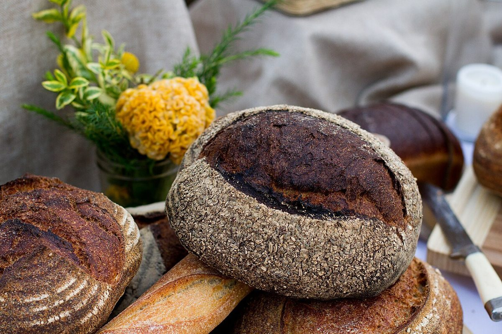
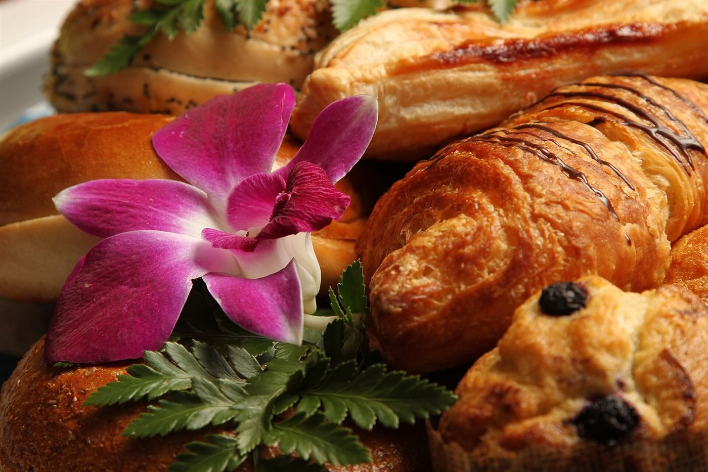
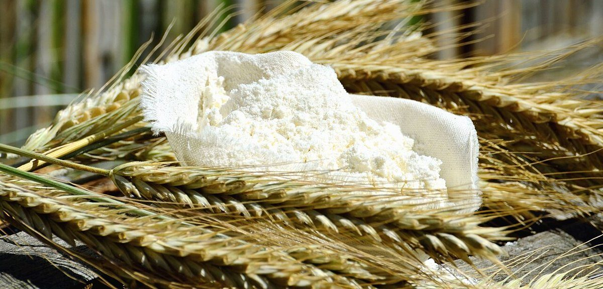
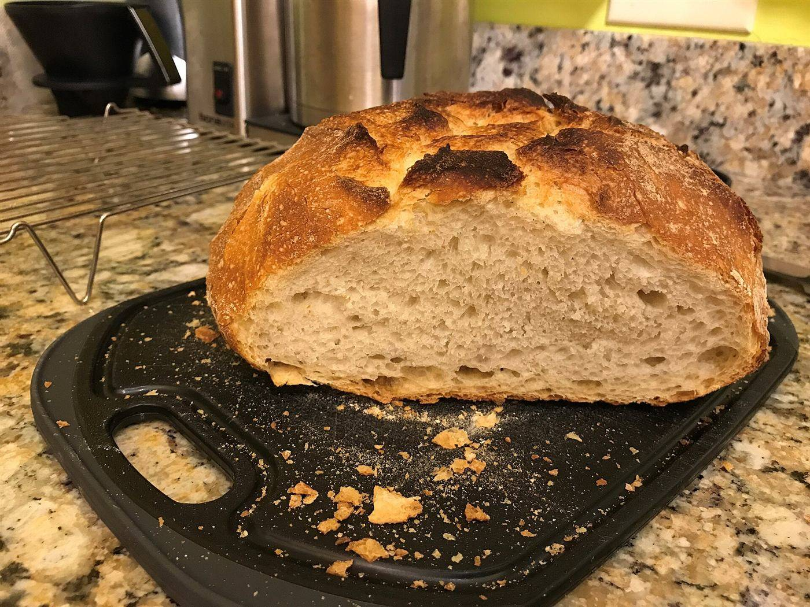

店のこと
お店について
お店の詳しい情報は準備中です。確認できているのは所在地とInstagramだけです。


いまの情報
準備中の項目
お店のこだわり・歴史・商品などは、お店からお話をうかがってから載せる予定の欄です。このページでは憶測で書かず、空けています。
- お店の紹介文: 準備中
- こだわり: 準備中
- スタッフ紹介: 準備中
部位の見かた
図の六つの部位
- 1端子部カードの縁に並ぶ、金色の接点の列。
- 2書き込み防止スイッチ側面にある、小さくスライドする切り替え。
- 3面取りの角一つの角を斜めに落とした形。向きの目印になる。
- 4ラベル面表面の、文字や印を入れるための面。
- 5外装ケース中身を包む、薄い板状の外側。
- 6端子間の仕切り接点と接点のあいだの、細い溝。
ギャラリー(イメージ)
粉・麦・パンの写真



写真はパンやコーヒーのイメージです。お店のものではなく、お店で提供している商品を示すものでもありません。